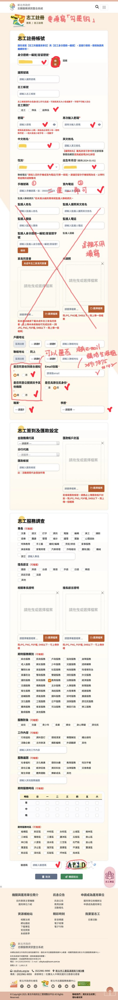

🌟 新北市志工系統：輕鬆登入教學
親愛的志工夥伴您好：請準備好您的「身分證字號」與「生日」，跟著步驟操作即可完成！
第一步：開啟網站
- 請點擊進入網址：vtc.ntpc.gov.tw
- 進入網頁後，點選右上角的 [志工請登入] 按鈕
- 在跳出的視窗最下方，點選 [已有衛福部帳號使用本市志工管理整合平台]


第二步：身分核對
- 輸入您的 身分證字號 與 出生年月日
- 按下 [送出檢核]
- 看到「檢核無誤」後，點選 [我已詳細閱讀並了解，進入註冊畫面]


💡 貼心提醒： 如果試了好幾次都無法成功，請別擔心，直接聯絡 輔導室適性生涯組2691-7875#142 協助您唷！
第三步：設定您的專屬資料
- 看到 紅色星號「*」 的地方請務必填寫
- 🔑 密碼小撇步： 長度 8-12 碼，必須包含 英文字母、數字 與 特殊符號 (如 !@#$%)
- 📧 Email 填寫： 請務必填寫正確，這關係到帳號能否成功啟用唷！
- 最後輸入驗證碼，點選 [確認送出]
